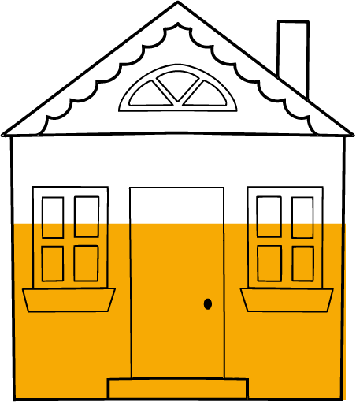
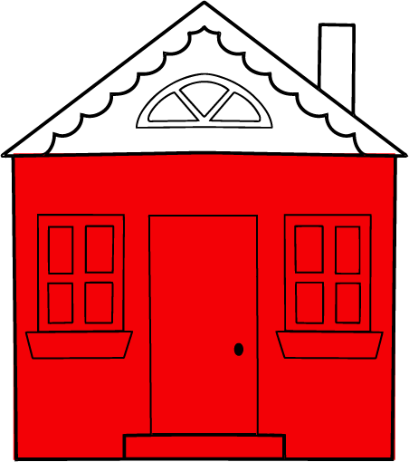
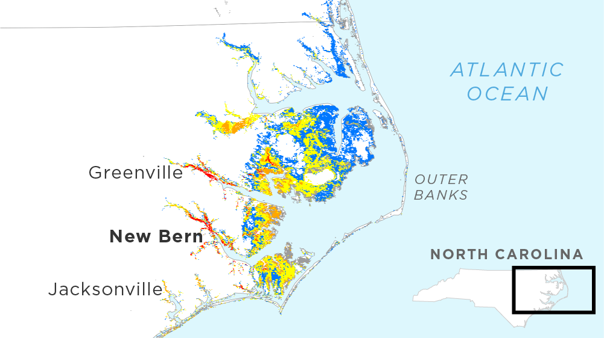

<%= await t.include("lib/_head.html") %>

<% if (COPY.labels.headline) { %>
<h1><%= t.smarty(COPY.labels.headline) %></h1>
<% } %>

<% if (COPY.labels.subhed) { %>
<h2><%= t.smarty(COPY.labels.subhed) %></h2>
<% } %>

<div id="" class="graphic">
  <div class="legend">
    <div class="topper">
      <h3><%= t.smarty(COPY.labels.hed_legend) %></h3>

      <ul class="key">
        <li class="key-item intertidal"><b></b> <label><%= t.smarty(COPY.labels.key_intertidal) %></label></li>
      </ul>
    </div>

    <div class="levels">
      <div class="house">
        
        <p>1+ feet</p>
      </div>
      <div class="house">
        
        <p>3+ feet</p>
      </div>
      <div class="house">
        
        <p>6+ feet</p>
      </div>
      <div class="house">
        
        <p>9+ feet</p>
      </div>
    </div>

  </div>
  <div class="surge">
    <h3><%= t.smarty(COPY.labels.hed_surge) %></h3>
    <picture>
      <source media="(min-width: 550px)" srcset="img/desktop.png">
      
    </picture>
  </div>
</div>

<% if (COPY.labels.footnote) { %>
<div class="footnotes">
    <h4>Notes</h4>
    <p><%= COPY.labels.footnote %></p>
</div>
<% } %>

<div class="footer">
    <% if (COPY.labels.source) { %><p>Source: <%= COPY.labels.source %></p><% } %>
    <% if (COPY.labels.credit) { %><p>Credit: <%= COPY.labels.credit %></p><% } %>
</div>

<script src="./graphic.js"></script>

<%= await t.include("lib/_foot.html") %>
